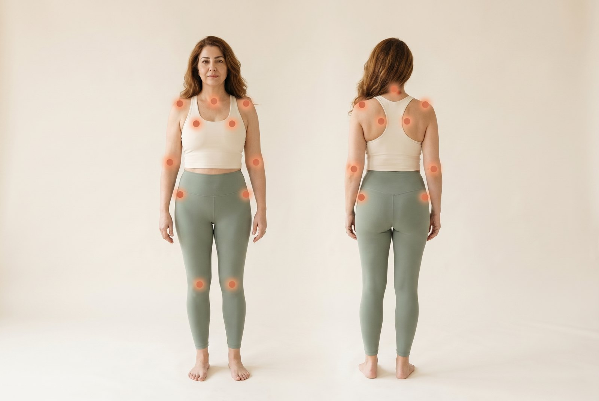

Widespread pain, deep fatigue and unrefreshing sleep. Fibromyalgia is real, and it comes from how the nervous system processes pain across the whole body, so whole body care comes first, with a compound cream as an option to trial for focused areas of pain.
Fibromyalgia causes pain in the muscles and soft tissues all over the body, along with deep tiredness, poor sleep and trouble with memory and focus. It is a real illness, and the pain is not "all in your head."(1)
It comes from how the nervous system handles pain, not from damage or swelling in the joints and muscles. The places that hurt usually look completely normal, because the problem is in the volume of the pain signal, not in the tissue.(1, 2)
The best understood explanation is that the brain and spinal cord become more sensitive to pain. They turn up the volume, so signals that would normally feel minor are felt as real, significant pain. This is a change in how pain is processed, not swelling, which is a key reason ordinary anti inflammatory painkillers do not help much.(1, 2)
Researchers have also found that some people with fibromyalgia have changes in the tiny nerve fibres of the skin, but what this means is still debated, and it is not used to diagnose or treat the condition in routine care.(2)
It is more common in women and is the most frequent cause of widespread muscle pain in women between about 20 and 55, though anyone can get it. It often comes alongside other conditions, including irritable bowel, migraine and tension headaches, sleep problems, and depression or anxiety.(1, 2)
The defining feature is pain that is widespread, felt on both sides of the body and both above and below the waist, for at least three months. But it is really a whole body experience:(2)

There is no blood test or scan for fibromyalgia. It is diagnosed from the pattern of symptoms, combining how many areas of the body are painful with how severe the fatigue, sleep and thinking problems are, present for at least three months.(2)
Blood tests are used not to find fibromyalgia but to rule out other conditions that can look similar, such as thyroid problems or inflammatory arthritis. Reaching the diagnosis can take time, which is part of why a clear explanation can come as a relief.(2, 1)
Because fibromyalgia comes from how the whole nervous system handles pain, the treatments that work are whole body ones, and medicine alone is almost never enough. The foundation is the same for everyone: understanding the condition, moving your body, and protecting sleep and mood.(3)
Whole body care first, with an optional cream
We will be honest with you, because it matters. Fibromyalgia is widespread pain that comes from how the whole nervous system processes pain, so the heart of treatment is the whole body plan above, and a cream on its own will not fix widespread pain.(1)
At the same time, we see in practice that the usual treatments do not work well enough for everyone. And many people with fibromyalgia also carry focused pain on top of it: a sore knee or other joint, tight and knotted muscle areas known as myofascial pain, low back pain, or a patch of nerve pain. Those focused problems are exactly what a compound cream is made for.(3)
So clara does offer a compound cream as an option to trial, for people who would like to treat those focused areas. Some of the same ingredients we use for knee, back and nerve pain may ease the localized parts of your pain, even though a cream is not a treatment for the whole body condition itself. We stay honest about the evidence: a large trial of multi ingredient creams for general pain found no benefit over placebo, so we offer the cream as an optional trial alongside the whole body plan, never as a cure.(4)
If you would like to try it, a clara doctor reviews your pain, your history and your other medicines, decides whether a cream makes sense and what to put in it, and you give it a fair trial of a few weeks and keep it only if it helps.(3)
Fibromyalgia is treated by caring for the whole body: movement, sleep, stress and, when needed, medicines that calm the nervous system. A cream is not a substitute for that. But if focused areas of pain are part of your picture, clara can offer a compound cream to trial alongside your plan.(3)
Send a quick note to your clara care team. A Canadian licensed clara doctor will help you build a whole body plan and review whether a compound cream is worth trialing for any focused areas of pain, before anything is made or shipped.
Request a cream trial →This guide is general education from your clara care team and is not a substitute for personal medical advice. Treatment decisions are made with your clara doctor based on your health, symptoms and history.